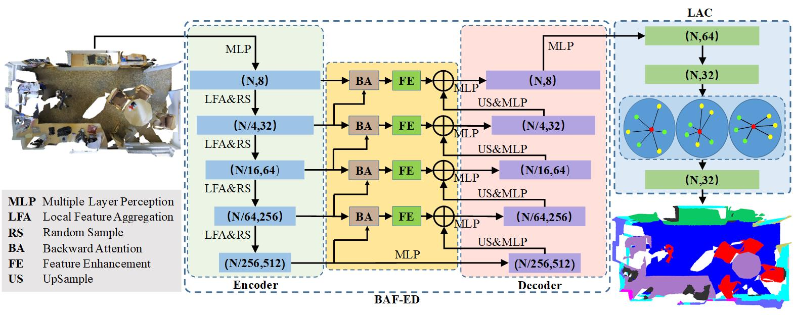
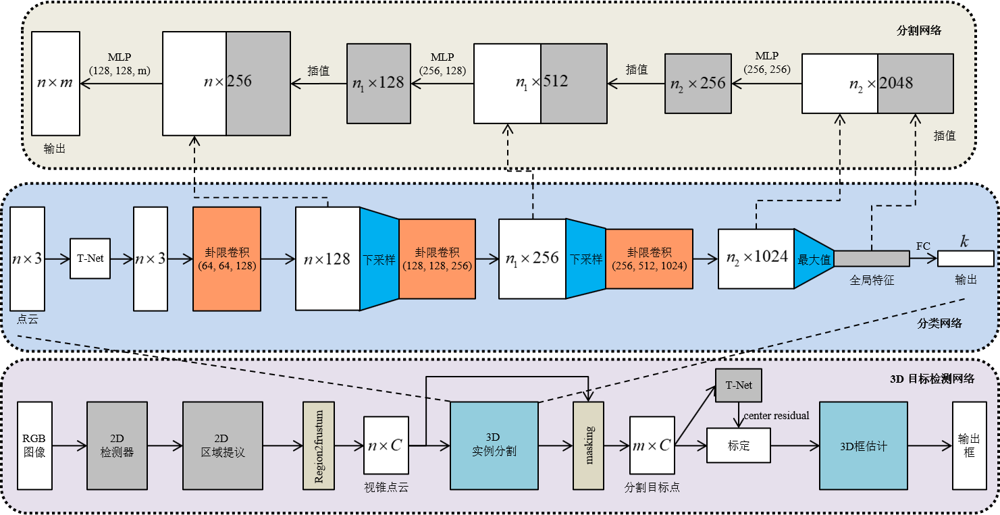

- Home
- Publications
|
I am Xiang Xu (许翔)， a Master student
at Nanjing University of Information Science & Technology surpervised by
Prof. Qingshan Liu. I received
my bachelor degree at Nanjing University of Information Science & Technology
(Nanjing, China) in 2018. |
|
 |
paper
abstract
bibtex
code
In this paper, a Backward Attentive Fusing Network with Local Aggregation Classifier (BAF-LAC) is proposed to improve the performance of 3D point cloud semantic segmentation. It consists of a Backward Attentive Fusing Encoder-Decoder (BAF-ED) to learn semantic features and a Local Aggregation Classifier (LAC) to maintain the context-awareness of points. BAF-ED narrows the semantic gap between the encoder and the decoder via fusing multi-layer encoder features with the decoder features. High-level encoder features are transformed into an attention map to modulate low-level encoder features backward. LAC adaptively enhances the intermediate features in point-wise MLPs via aggregating the features of neighboring points into the center point. It takes the place of commonly used post-processing techniques and retains context consistency into the classifier. Equipped with these modules, BAF-LAC can extract discriminative semantic features and predict smoother results. Extensive experiments on Semantic3D, SemanticKITTI, and S3DIS demonstrate that the proposed method can achieve competitive results against the state-of-the-art methods. |
|
 |
paper
abstract
bibtex
code
基于深度学习的三维点云数据分析技术得到了越来越广泛的关注, 然而点云数据的不规则性使得高效提取点云中的局部结构信息仍然是一大研究难点. 本文提出了一种能够作用于局部空间邻域的卦限卷积神经网络(Octant Convolutional Neural Network, Octant-CNN), 它由卦限卷积模块和下采 样模块组成. 针对输入点云, 卦限卷积模块在每个点的近邻空间中定位八个卦限内的最近邻点, 接着通过多层卷积操作将八卦限中的几何特征抽象成语 义特征, 并将低层几何特征与高层语义特征进行有效融合, 从而实现了利用卷积操作高效提取三维邻域内的局部结构信息; 下采样模块对原始点集进行 分组及特征聚合, 从而提高特征的感受野范围, 并且降低网络的计算复杂度. Octant-CNN通过对卦限卷积模块和下采样模块的分层组合, 实现了对三 维点云进行由底层到抽象、从局部到全局的特征表示. 实验结果表明, Octant-CNN在对象分类、部件分割、语义分割和目标检测四个场景中均取得了较 好的性能. |
{kind=link}
{kind=link}
{kind=link}